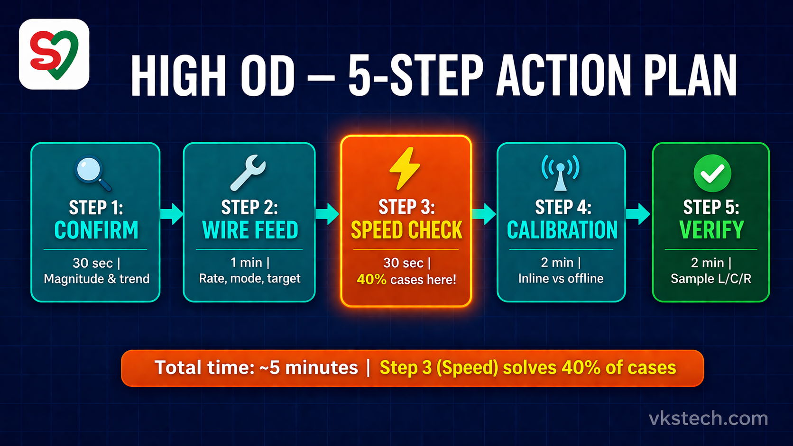
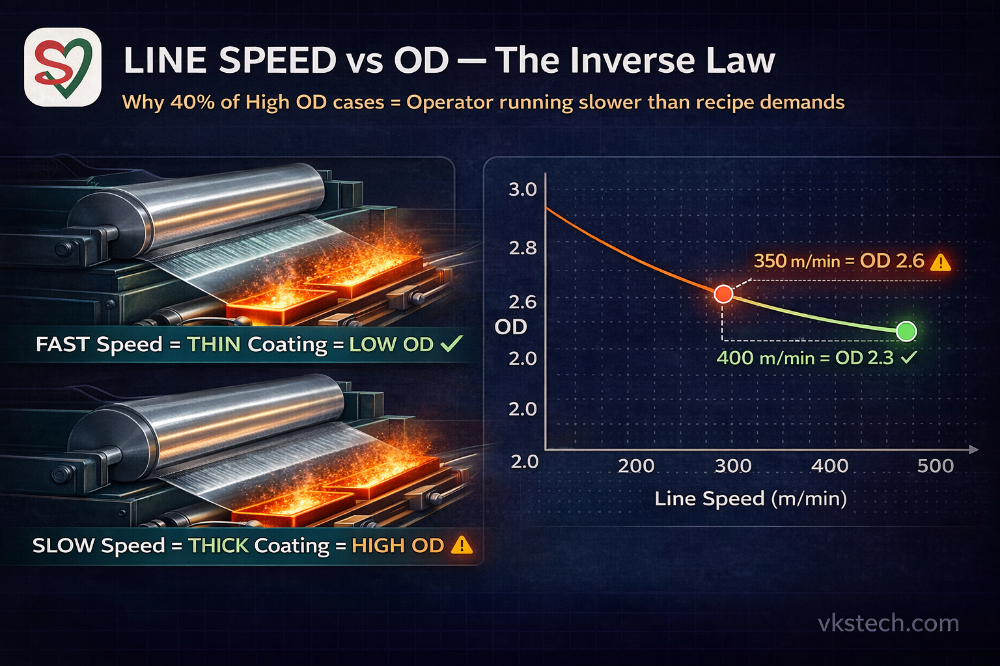
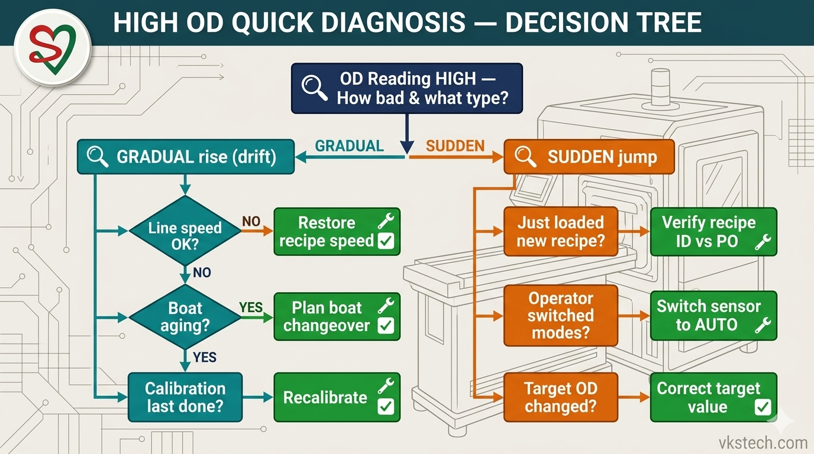
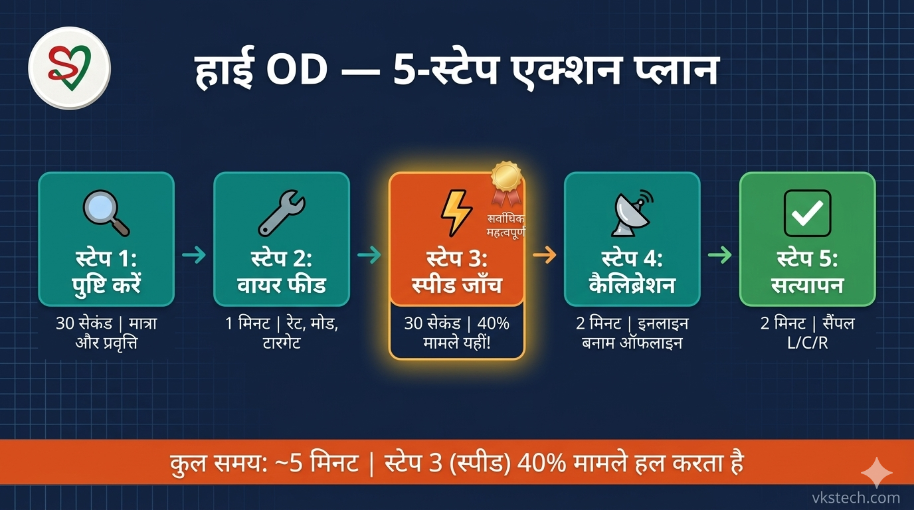
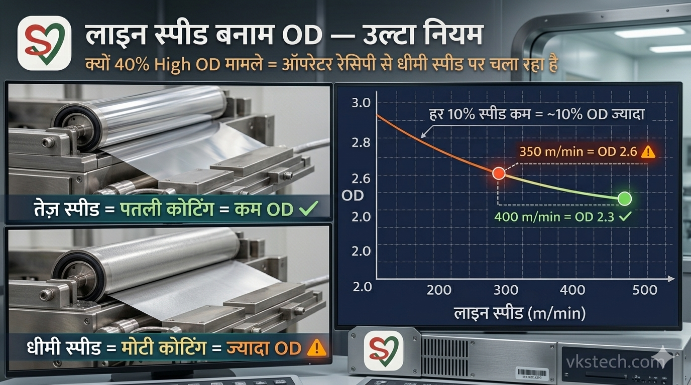
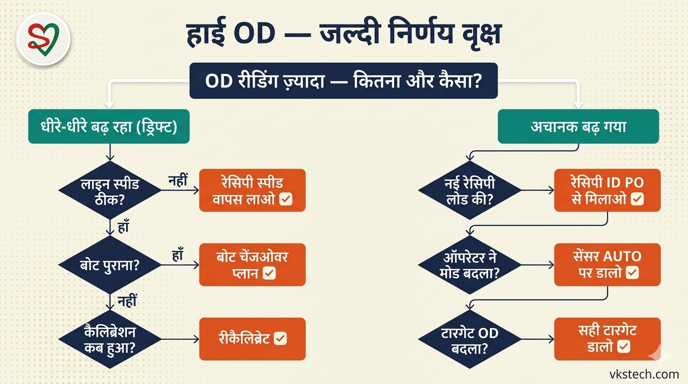

🔴 High OD Defect — The Silent Money Burner
Your Inline OD Sensor screen shows OD 2.6 against a target of 2.3. The coating looks fine, there's no customer complaint yet — so why panic? Here's why: every 0.1 of excess OD burns aluminium wire, shortens boat life, and silently eats ₹30,000–₹50,000 from your monthly P&L.
Unlike Low OD (which screams for attention because of visible barrier failure), High OD is the defect that nobody notices but everyone pays for. This blog gives you the exact 5-step action plan to catch it, fix it, and prevent it — the same field-tested method used on Met-1 and Met-2 lines.
💸 Why High OD Hurts More Than You Think
- Direct wire cost: Running OD 2.5 when target is 2.3 = ~9% extra aluminium wire consumed per jumbo
- Boat life reduction: Higher wire feed = harder boat wear = premature boat replacement
- Brittle metal layer: Over-coated films are more prone to flaking during lamination
- Customer spec violation: Some customers reject over-spec too — not just under-spec
- Hidden P&L drain: ₹30,000–₹50,000/month plant-level loss that never shows in defect reports
🎯 The 5-Step High OD Action Plan
| Step | Action | Time | Tools Needed |
|---|---|---|---|
| 1. Confirm | Check magnitude & trend on sensor | 30 sec | HMI screen |
| 2. Wire Feed Check | HMI rate, AUTO mode, target value | 1 min | HMI only |
| 3. Speed Check | Actual line speed vs recipe | 30 sec | HMI + recipe card |
| 4. Calibration | Inline vs offline match | 2 min | Offline densitometer |
| 5. Verify | Reduce wire feed or raise speed | 2 min | Offline sample |

🔍 Step 1 — CONFIRM (30 seconds)
Before adjusting anything, look at the sensor screen carefully:
- How much over target? → 0.1 is normal drift; 0.3+ is serious
- Gradually climbing or sudden jump? → Gradual = process drift; Sudden = mode switch or recipe load
- All probes high or only 1-2? → All = system issue; 1-2 = local problem
- Did operator just load a new recipe? → First place to look
This 30-second diagnosis saves you from random adjustments. Don't skip it.
🔧 Step 2 — WIRE FEED CHECK (1 minute)
For High OD, the wire feed is delivering too much material. Check in this order:
| Check | Symptom | Fix |
|---|---|---|
| Wire feed rate | HMI shows value higher than recipe baseline | Let AUTO mode correct (if ON) |
| Sensor mode | Stuck in Manual mode with high feed | Switch back to AUTO |
| Target OD value | Target accidentally set to higher number | Verify recipe target matches customer spec |
| Recipe ID | Wrong recipe loaded (OD 2.8 recipe for OD 2.3 job) | Load correct recipe immediately |
⚡ Step 3 — SPEED CHECK (The Silent Culprit)
This is where High OD differs from Low OD. The relationship is simple but often missed:

- Lower line speed + same wire feed = more coating deposited per metre = Higher OD
- Check actual line speed on HMI vs recipe target
- If running at 350 m/min instead of recipe 400 m/min → that 12% speed drop causes ~12% OD rise
- Common causes of unplanned speed drop: tension issue, unwind near end, operator deliberately slowed for some reason
Fix: Bring speed back to recipe. In 90% of High OD cases where AUTO mode is ON, this single action fixes the problem in under 2 minutes.
📡 Step 4 — INLINE SENSOR CALIBRATION CHECK
Sometimes the coating is fine — the sensor is lying. Quick check:
- Take an offline sample after 50 metres
- Measure on offline densitometer (X-Rite or similar)
- Compare with inline reading at same position
- Mismatch >0.1? → Sensor calibration drifted → Recalibrate against offline reference
- Match within ±0.05? → Sensor is fine, issue is real process problem
✅ Step 5 — VERIFY
Once you've identified the cause, apply the fix and verify in this order:
- Apply corrective action (reduce wire feed / increase speed / load correct recipe)
- Wait 50 metres for system to stabilize
- Take offline sample → measure L/C/R
- All three within ±0.1 of target? → Ramp to full production speed
- Still high? → Re-check Step 3 (speed) — this is the most-missed step

🏭 Real Shop Floor Story — The Night Shift That Cost ₹12,000
Met-2, night shift, 2:00 AM. OD was holding steady at 2.30 against a 2.3 target. Perfect run. By 3:30 AM, the sensor showed 2.55. The operator reduced wire feed manually. By 4:00 AM — still 2.55. He reduced again. Still 2.55.
By 5:00 AM, OD had crept to 2.75. The operator had already reduced wire feed by 15%. Panic set in. He called the supervisor.
The supervisor walked in, looked at three things for 30 seconds: OD reading, wire feed %, actual line speed. Then he said: "Kya speed check ki?"
Recipe called for 400 m/min. Actual speed: 335 m/min. The unwind roll was near its end, tension had softened, line had been gradually slowing for 3 hours. Nobody had checked.
Fix: Change unwind roll, restore speed to 400. OD settled to 2.32 in under 3 minutes. Total damage: ~₹12,000 of extra aluminium wire burned over 3 hours. Root cause filed in the defect format. Now every Met-2 operator has a single rule written above the HMI: "High OD? Check speed FIRST."
Lesson: The wire feed system was doing its job perfectly — in AUTO mode it was trying to compensate for slower line speed by feeding more wire to maintain OD. When the operator manually overrode AUTO and reduced wire feed, he fought against the system instead of fixing the real problem. Three hours of diagnosis, fixed in 30 seconds once someone asked the right question.
📊 Top 5 Causes of High OD — Ranked by Frequency
| Rank | Cause | Frequency | First Action |
|---|---|---|---|
| #1 | Line speed below recipe target | ~40% | Restore recipe speed |
| #2 | Wrong recipe loaded | ~25% | Verify recipe ID against PO |
| #3 | Sensor stuck in Manual mode | ~15% | Switch to AUTO |
| #4 | Sensor calibration drifted | ~12% | Recalibrate vs offline |
| #5 | Target OD wrongly entered | ~8% | Re-enter correct target |
💰 The Real Cost of Ignoring High OD
Let's do the math for a typical metallization plant:
| Parameter | Value |
|---|---|
| Average OD deviation (over target) | +0.15 OD |
| Extra wire consumption | ~6.5% |
| Monthly aluminium wire consumed | 2,500 kg |
| Aluminium wire rate | ₹341/kg |
| Monthly extra wire cost | ₹55,400 |
| Annual extra wire cost | ₹6.6 Lakh |
| Additional boat wear (~5% faster) | +₹20,000/month |
| Total annual invisible loss | ₹8.8 Lakh |
Controlling High OD by just 0.1 on average can save a mid-sized plant ₹5-6 lakh per year — without adding a single new machine or operator. That's pure P&L improvement.
🛡️ Prevention — Stop High OD Before It Starts
- Shift handover: Outgoing operator confirms current OD to incoming — catches drift early
- Recipe verification: Supervisor signs off on recipe ID before every new jumbo starts
- Speed monitoring: Alert when actual speed drops >5% below recipe for more than 2 minutes
- Monthly calibration: Schedule Inline OD Sensor calibration against offline standard
- AUTO mode lock: Prevent operator from switching to Manual without supervisor password
📥 Free Downloads — Take This to the Shop Floor
Two professionally designed PDFs for immediate plant use. Print, laminate, and use during real defects:
🔴 High OD Defect — ख़ामोश पैसे जलाने वाला
आपकी Inline OD Sensor screen पर OD 2.6 दिख रहा है, target है 2.3। Coating दिखने में ठीक है, customer complaint भी नहीं — तो घबराएं क्यों? इसलिए: हर 0.1 extra OD मतलब aluminium wire जल रहा है, boat life कम हो रही है, और महीने की P&L से ₹30,000–₹50,000 चुपचाप निकल रहे हैं।
Low OD (जो barrier failure की वजह से तुरंत दिखता है) के उलट, High OD वह defect है जो किसी को दिखता नहीं, पर सबको भुगतना पड़ता है। यह blog आपको वही field-tested 5-step action plan देता है जो Met-1 और Met-2 lines पर इस्तेमाल होता है।
💸 High OD से ज़्यादा नुकसान क्यों
- सीधा wire cost: Target 2.3 पर 2.5 चलाने से हर jumbo में ~9% extra aluminium wire
- Boat life कम: ज़्यादा wire feed = boat की wear तेज़ = जल्दी replacement
- Brittle metal layer: Over-coated films lamination में flaking करती हैं
- Customer spec violation: कुछ customers over-spec भी reject करते हैं — सिर्फ़ under-spec नहीं
- Hidden P&L drain: ₹30,000–₹50,000/month का plant-level नुकसान जो defect reports में नहीं दिखता
🎯 5-Step High OD Action Plan
| Step | Action | Time | ज़रूरी Tools |
|---|---|---|---|
| 1. Confirm | Sensor पर magnitude & trend check | 30 sec | HMI screen |
| 2. Wire Feed Check | HMI rate, AUTO mode, target value | 1 min | HMI only |
| 3. Speed Check | Actual line speed vs recipe | 30 sec | HMI + recipe card |
| 4. Calibration | Inline vs offline match | 2 min | Offline densitometer |
| 5. Verify | Wire feed कम या speed बढ़ाओ | 2 min | Offline sample |

🔍 Step 1 — CONFIRM (30 सेकंड)
कुछ भी adjust करने से पहले sensor screen ध्यान से देखो:
- Target से कितना ज़्यादा? → 0.1 normal drift है; 0.3+ serious है
- धीरे-धीरे बढ़ा या अचानक? → Gradual = process drift; Sudden = mode switch या recipe load
- सभी probes high या सिर्फ़ 1-2? → सभी = system issue; 1-2 = local problem
- अभी operator ने new recipe load किया? → पहले यहीं देखो
यह 30-second diagnosis आपको random adjustments से बचाती है। Skip मत करो।
🔧 Step 2 — WIRE FEED CHECK (1 minute)
High OD में wire feed ज़्यादा material दे रहा है। इस order में check करो:
| Check | Symptom | Fix |
|---|---|---|
| Wire feed rate | HMI पर value recipe baseline से ज़्यादा | AUTO mode correct करने दो (अगर ON है) |
| Sensor mode | Manual mode में फँसा, high feed के साथ | AUTO पर switch करो |
| Target OD value | Target ग़लती से ज़्यादा number पर set | Customer spec से मिलाओ |
| Recipe ID | ग़लत recipe load (OD 2.3 job में OD 2.8 recipe) | सही recipe तुरंत load करो |
⚡ Step 3 — SPEED CHECK (ख़ामोश क़ातिल)
यहीं High OD, Low OD से अलग है। Relationship सीधा है पर अक्सर miss होता है:

- कम line speed + same wire feed = हर metre पर ज़्यादा coating = Higher OD
- HMI पर actual line speed vs recipe target check करो
- Recipe 400 m/min है, चल रहा 350 m/min — यह 12% speed drop ~12% OD rise कर देता है
- Unplanned speed drop के कारण: tension issue, unwind ख़त्म होने वाला, operator ने जान-बूझकर slow किया
Fix: Speed वापस recipe पर लाओ। 90% High OD cases में जहाँ AUTO mode ON है, यह एक action 2 minute में problem fix कर देती है।
📡 Step 4 — INLINE SENSOR CALIBRATION CHECK
कभी coating ठीक होती है — sensor झूठ बोल रहा होता है। Quick check:
- 50 metres के बाद offline sample लो
- Offline densitometer (X-Rite या similar) पर measure
- उसी position की inline reading से compare
- Mismatch >0.1? → Sensor calibration drift हो गया → Offline reference से recalibrate
- ±0.05 के अंदर? → Sensor ठीक है, असली process problem है
✅ Step 5 — VERIFY
कारण identify होने के बाद fix apply करो और इस order में verify करो:
- Corrective action apply करो (wire feed कम / speed बढ़ाओ / सही recipe load करो)
- System stabilize होने के लिए 50 metres wait करो
- Offline sample लो → L/C/R measure
- तीनों target के ±0.1 में? → Full production speed पर जाओ
- अभी भी high? → Step 3 (speed) वापस check — यह सबसे ज़्यादा miss होता है

🏭 असली Shop Floor कहानी — वह रात की शिफ्ट जिसने ₹12,000 जलाए
Met-2, रात की शिफ्ट, रात 2:00 बजे। OD बिल्कुल steady था 2.30 पर, target 2.3। Perfect run चल रहा था। रात 3:30 तक sensor 2.55 दिखाने लगा। Operator ने manually wire feed कम किया। 4:00 बजे तक — अभी भी 2.55। फिर कम किया। फिर भी 2.55।
सुबह 5:00 तक OD बढ़कर 2.75 तक पहुँच गया। Operator wire feed 15% तक कम कर चुका था। घबराहट शुरू हो गई। Supervisor को बुलाया।
Supervisor आया, 30 सेकंड में तीन चीज़ें देखीं: OD reading, wire feed %, actual line speed. फिर बोला: "क्या speed check की?"
Recipe में speed थी 400 m/min. Actual speed: 335 m/min. Unwind roll ख़त्म होने वाला था, tension soft हो गई थी, line 3 घंटे से धीरे-धीरे slow हो रही थी। किसी ने check ही नहीं किया।
Fix: Unwind roll बदला, speed 400 पर restored। OD 3 मिनट में 2.32 पर settle हो गया। कुल नुकसान: ~₹12,000 extra aluminium wire 3 घंटे में जला। Root cause defect format में file कर दी गई। अब हर Met-2 operator के HMI के ऊपर एक rule लिखा है: "High OD? पहले speed check करो।"
सीख: Wire feed system अपना काम perfectly कर रहा था — AUTO mode में वह कम speed को compensate करने के लिए ज़्यादा wire feed कर रहा था ताकि OD maintain रहे। जब operator ने manually AUTO override करके wire feed कम किया, तो वह system के against लड़ रहा था, असली problem fix नहीं कर रहा था। 3 घंटे की diagnosis — सही सवाल पूछते ही 30 सेकंड में हल।
📊 High OD के Top 5 कारण — Frequency Ranked
| Rank | कारण | Frequency | पहली Action |
|---|---|---|---|
| #1 | Line speed recipe से कम | ~40% | Recipe speed restore |
| #2 | ग़लत recipe loaded | ~25% | Recipe ID को PO से मिलाओ |
| #3 | Sensor Manual mode में फँसा | ~15% | AUTO पर switch |
| #4 | Sensor calibration drift | ~12% | Offline से recalibrate |
| #5 | Target OD ग़लत enter | ~8% | सही target enter करो |
💰 High OD नज़रअंदाज़ करने का असली नुकसान
एक typical metallization plant का calculation देखो:
| Parameter | Value |
|---|---|
| Average OD deviation (target से ऊपर) | +0.15 OD |
| Extra wire consumption | ~6.5% |
| Monthly aluminium wire consumed | 2,500 kg |
| Aluminium wire rate | ₹341/kg |
| Monthly extra wire cost | ₹55,400 |
| Annual extra wire cost | ₹6.6 Lakh |
| Additional boat wear (~5% तेज़) | +₹20,000/month |
| Total annual invisible loss | ₹8.8 Lakh |
High OD को सिर्फ़ 0.1 average से control करना मतलब mid-sized plant को सालाना ₹5-6 लाख की बचत — बिना नई मशीन, बिना नए operator के। यह pure P&L improvement है।
🛡️ Prevention — High OD आने से पहले रोको
- Shift handover: जाने वाला operator आने वाले को current OD confirm करे — drift जल्दी पकड़ में आती है
- Recipe verification: हर नए jumbo से पहले supervisor recipe ID sign-off करे
- Speed monitoring: Actual speed recipe से 5% कम 2 minute तक रहे तो alert
- Monthly calibration: Inline OD Sensor को offline standard से calibrate करो
- AUTO mode lock: Supervisor password के बिना operator Manual पर switch न कर सके
📥 मुफ़्त Downloads — Shop Floor पर ले जाओ
दो professionally designed PDFs जो plant में तुरंत इस्तेमाल हो सकते हैं। Print करो, laminate करो, real defects में use करो: